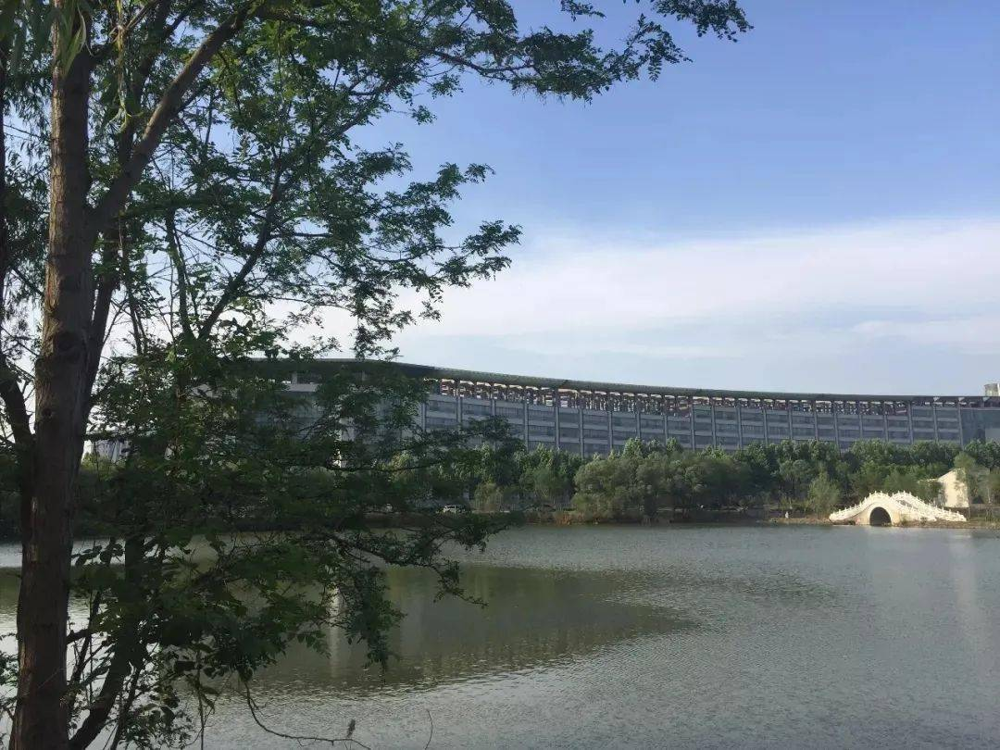

天一湖-春
“天一湖畔，树抽新芽，波光粼粼，天鹅相依。春日湖，
暖复明"

得月桥和同心亭旁，花香迎面，绿树展芽。蓝天与碧水相映，青草与大地相衬。
冷酷的寒冬恋恋不舍地离开了我们，可爱的春姐姐迈着轻盈的脚步向我们走来。春风轻轻吹过，吹起了天一湖的一片生机。
湖边的小草探出了它那碧绿的小脑袋，好奇地望着眼前的世界，远远望去，就像一张巨大的绿色地毯。春风轻轻吹过，小草随风向我们点头微笑，多可爱呀！
岸边的树也长出了嫩绿的长发，吐出了碧绿的嫩芽。春风轻轻吹过，她那美丽的长发就垂到了清澈的湖水中，好像是一个可爱的小姑娘在湖边照镜子，显得格外优雅。
天一的湖水波光粼粼，清澈见底，倒映着湖边美丽的景色，使人心旷神怡。春风轻轻吹过，天一湖水一荡一漾，像是点点繁星在波浪中闪亮。
冰雪融化，湖面解封，春天是万物复苏的季节。瞧瞧！湖面上有几只黑天鹅在嬉戏呢！它们有的在闻淡淡的花香，有的在看那波光粼粼的湖水，有的专心致志的捕捉小鱼。最开心的，还是小黑天鹅们在一起追逐打闹
，真是太可爱了！真令人流连忘返。这美妙的画卷一定是春姐姐送给我们的礼物啦！
这是相关的诗句
孤山寺北贾亭西，水面初平云脚低。几处早莺争暖树，谁家新燕啄春泥。
乱花渐欲迷人眼，浅草才能没马蹄。最爱湖东行不足，绿杨阴里白沙堤。
——《钱塘湖春行》
（唐) 白居易